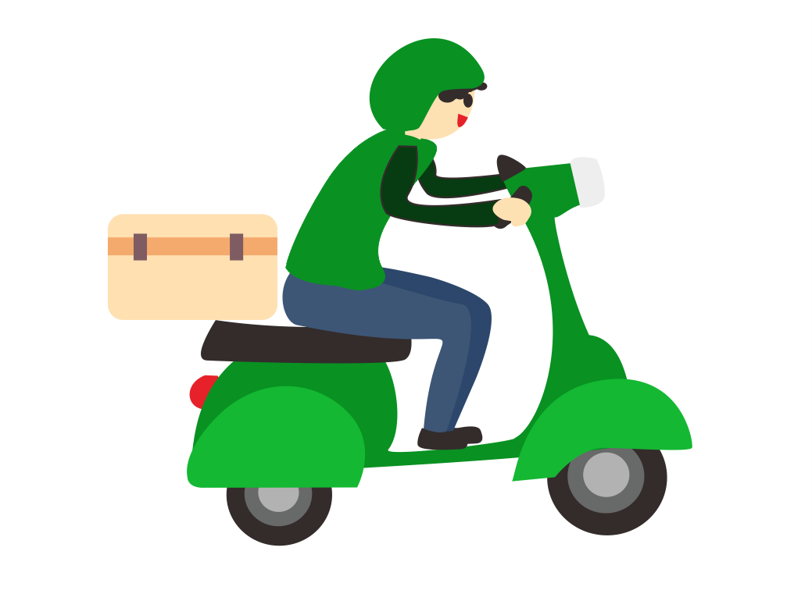

Border Radius Berfungsi untuk membuat kotak menjadi tumpul pinggirannya
menyisipkan gambar pada div yang menggunakan border radius

Opacity Berfungsi untuk membuat element menjadi transparan
element didalamnya akan mengkuti parentnya jika terkena opacity
element didalam parent tidak dapat dibuat opacity
property box shadow
x-offset y-offset blur color
box shadow with spread and transisiton
gerakan mouse ke kotak biru muda
h
box shadow dengan inset dan multiple shadow
inset membuat shadow didalam
h